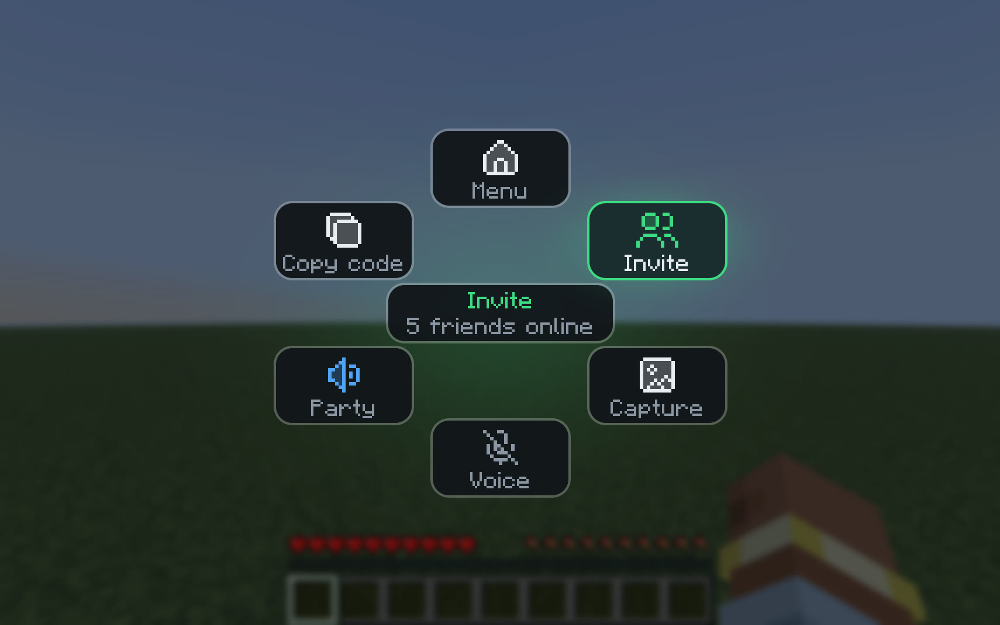

Your PC is the server, so there is nothing to rent and nothing to set up on your router.
01
Host your world
Open any world and press Host. From the title screen it's one click: the world opens and hosting starts.
02
Invite a friend
Add friends by their Minecraft name, then press Invite. A Join button pops up in their game. No codes to copy.
03
Play together
They're in. Talk with voice chat, and your resource packs and shaders come along if they want them.
Hosting
Your PC is the server.
Pick a world and it opens with hosting already on. Close the game and it's off again. That's the whole setup.
One click from the title screen
Friends-only until you say otherwise
Automatic backups while friends play
JavaHost Host
Friends
Invite. Join. Done.
Add friends by name and see who's online or already hosting. One button brings them in, and one brings you to them.
Star your favourites
Invite everyone online at once
Chat and screenshots, end-to-end encrypted
JavaHost Friends
Voice chat
Hear who's near.
Voices fade with distance, so a friend across the map sounds across the map. Or switch the whole world to party voice.
Push to talk or open mic
A volume slider for every friend
Nothing extra to install
JavaHost Voice
Mods
Mods, minus the homework.
Browse mods and modpacks from inside the game and install with one click. Nobody has to compare mod lists again.
A friend joining gets the same mods automatically
Their own mods are put aside and come back after
One-click performance mods
JavaHost Mods
01
JavaHost Host
One clickOne buttonFades with distanceOne-click install
Low ping
Straight to you.
Tools like this usually send every packet through a relay that may be a continent away. JavaHost connects your friend's game
straight to yours whenever both routers allow it, with nothing to forward. A relay steps in only when it has to.
The 240 ms is a real measurement: a home connection in the Middle East reaching a friend in the same country through the
nearest free public relay.
Try it
Have a go.
This is a working miniature of the JavaHost menu. Start hosting, invite a friend and switch on voice chat. It's only a demo:
nothing is really sent, and your microphone stays off.
The demo needs JavaScript. The pictures above show the real menu.
You
AlexPlays
LunaBuilds
MossyMiner
DemoNothing is really sent
JavaHost
Play
Tools
YouOnline
Good to see you
Host your world, then invite a friend.
New WorldNot hosting
Online now3
AlexPlaysOnline
LunaBuildsPlaying
MossyMinerOnline
Route–
Online now
AlexPlaysOnline
LunaBuildsPlaying
MossyMinerOnline
Recent activity
MossyMiner came online
LunaBuilds came online
AlexPlays came online
New WorldOnly you, for now
Invite codeappears when you host
Who can join
Only friends can joinOthers with the code are turned away
Player limitIncluding you
Voice chatHear and talk to nearby players
Mute my microphoneToggle in game with M
In your world
You voice off
Example mods (made up for this demo)
Example LanternsDecoration
Example BiomesWorldgen
Example CrittersMobs
Nothing installed yet. Pick one under Discover.
A friend joining gets the same mods automatically.
And more
The whole multiplayer kit.
Quick menu
Hold Z while playing for a ring of shortcuts: invite, mute, party voice, a screenshot, the invite code.

Public worlds
List your world for anyone to find, or join someone else's. Visitors can look around until you trust them to build.
Your rules
Set game modes, kick or ban, and lock world rules like difficulty or keep inventory so they stay put.
Private
Invites, chat and screenshots are encrypted between you and your friend. There is no JavaHost account to make.
Shared look
Guests are offered your resource packs and shader settings, so everyone sees the same world you built.
Send a world
Give a friend a copy of the world you're in, or a backup, without leaving the game.
0servers to rent
1click to invite
8builds, 1.21 to 26.3
$0forever
Download
Get JavaHost.
Free and open source. It gets its own launcher profile, so your normal Minecraft stays untouched.
JavaHost · Minecraft 1.21 to 26.3
For Fabric. JavaHost keeps itself up to date. All downloads
Open the Minecraft Launcher once, then close it.
Run the JavaHost Installer you downloaded.
Pick your Minecraft version, then click Install.
In the launcher, choose the JavaHost profile and press Play.
Yes, for one-click invites, voice, shared packs and modded worlds: send them this page. Someone without it can still join
with the address shown on your Host tab.
Does it change my normal Minecraft?
No. The installer makes a separate JavaHost profile and folder. It can copy your settings, packs and worlds over if you like.
Will it work with my router?
Almost always, with nothing to configure. JavaHost first tries to connect you and your friend directly, then your router's
own port opening, then IPv6, and finally a relay. The Host tab shows which ways are working.
Which Minecraft versions work?
Java Edition 1.21 to 1.21.11 and 26.1 to 26.3, with Fabric. You pick one in the installer, and each version gets its own
profile. Friends need the same version to play together.
Can we play with mods?
Yes. Install mods or modpacks from the Mods tab. When a friend joins your modded world, JavaHost downloads the same mods
for them, restarts their game and brings them back in. Their own mods are kept safe.
Is it private?
Invites, chat and screenshots are encrypted with a key only you and that friend share. They are delivered through
ntfy.sh, a public message service that can't read them. The game itself connects player to player.
My microphone is silent on Mac.
Give the Minecraft Launcher microphone access in System Settings → Privacy & Security → Microphone, then restart the game.